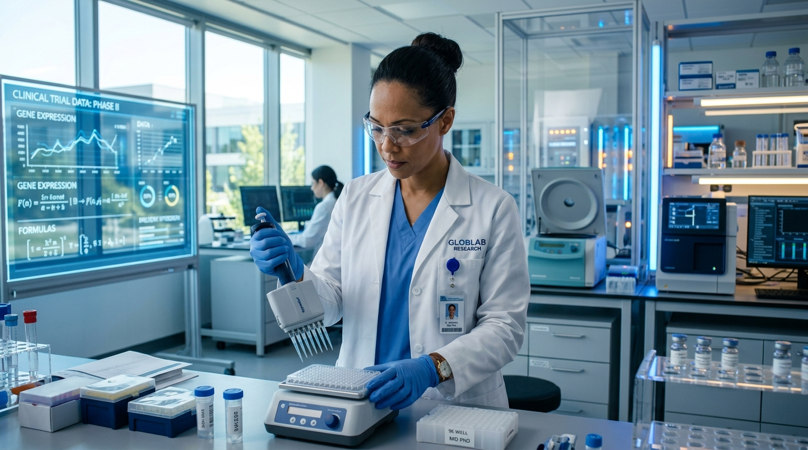

The Helix Platform™ & eSource Systems
Azul Bio-Research integrates advanced digital technologies directly into trial operations. We leverage validated eSource and eRegulatory systems to capture patient records in real-time, eliminating physical record storage errors and securing validation chains.
By conducting clinical trials on digital platforms, we provide sponsors with immediate access to study metrics and monitoring dashboards.
- eSource Documentation: Real-time patient data capture to optimize audit trials.
- eRegulatory System: Fully digital site master files and investigator logs.
- Secure Database Integration: Protected patient records operating under GCP and HIPAA guidelines.
